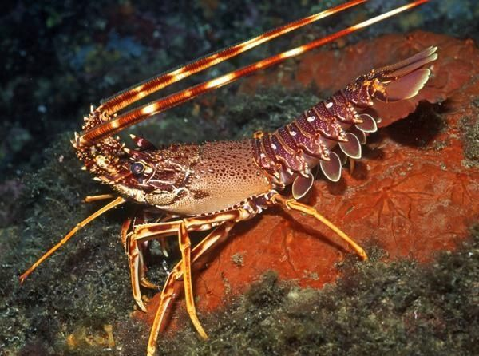

Baleia cachalote - Mamífero aquático
A baleia cachalote, cujo nome científico é Physeter macrocephalus,
pode ser encontrada em todos os oceanos.
São mamíferos aquáticos que pesam em torno de 40 toneladas e chegam
a atingir 20m de comprimento.
Veja mais

Peixe palhaço -
(Amphiprioninae frenatus)
Os peixes palhaço, cujo nome científico é Amphiprioninae frenatus, são peixes
pequenos e coloridos que podem ser encontrados nos oceanos Atlânticos
e Pacífico.
Veja mais

Lagosta
(Palinurus elephas) - Artrópode aquático
A Palinurus elephas é uma lagosta, o que significa que ela um artrópode
aquático. Esse artrópode possui um grosso exoesqueleto e pode ser encontrado em vários
oceanos e mares ao redor do mundo.
Veja mais

Estrela-do-mar
(Pisaster ochraceus) - Equinoderme
As Pisaster ochraceus são estrelas do mar, membros do filo dos equinodermes,
que são marcadas por seu formato e são encontradas no Oceano pacífico.
Veja mais

Tartaruga
(Chelonia Mydas) - Réptil aquático
As (Chelonia Mydas), popularmente conhecidas como tartaruga-verde são répteis aquáticos,
principalmente herbívoras e encontradas principalmente nos Oceanos Atlântico e Pacífico.
Veja mais